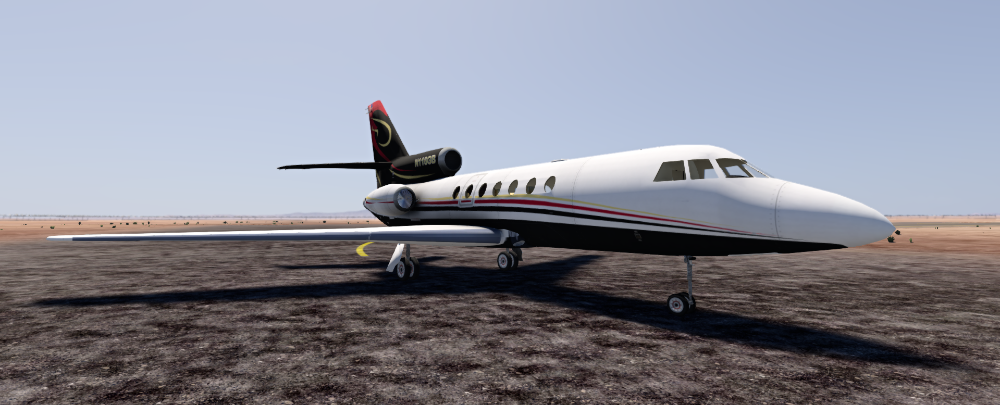
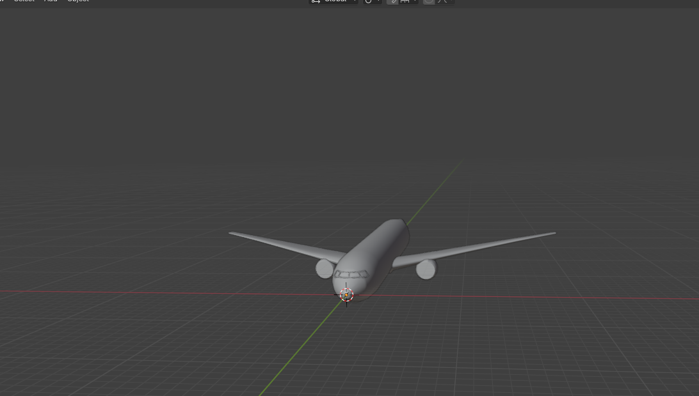
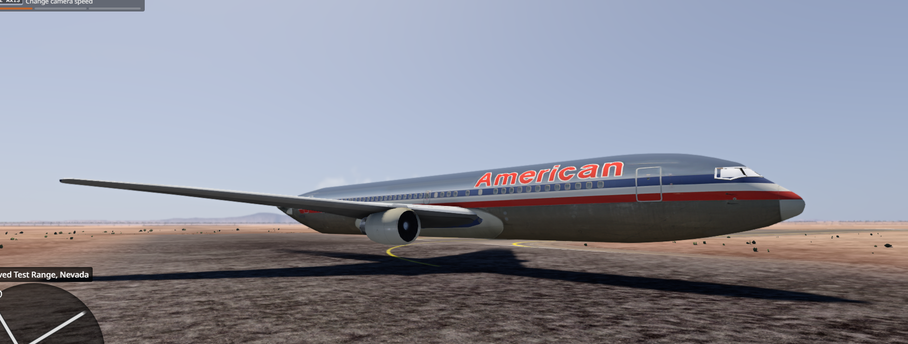

IRS Collect taxes, Blubhouse collect knowledge. I have confusion whenever I see people playing FPS games all night, and brutally screwing their sleep schedule. Why? Programming much better than this crap, LOL. I do falcon 50 lots of my time, falcon 50 is fun, Its like a job, but fun. It is incredibly easy to verify that I am serious programmer by watching my videos. People sometimes probably not believing me or something, they probably refuse to verify and play FPS game all night. Drowsy Sam contacted, maybe he respond and gasp and say, he fixed my mod! Or maybe he won't? Only time will tell. I dont get many comments at least on YouTube, so please leave some. Can you feel the september vibes? Try these: U-Boote Fahren or Ich Bin Soldat
10/10/26
It has become apparent that I am deemed a "hacker" because I reject the modern mentaility of being simply a user of a computer. In the older days when the computer was first invented, It's goal was simple: Compute! I am unable to pinpoint when the switch happened, but one day, computers were avalible in homes as well, for programming. But things really changed whenever big OS company releases OS that doesnt have much programming support, but is more focused on being a user of the computer. That has made people ignorant to the fact that you can have so much more fun with a computer if you program, instead of just being a user without the most basic of clues about how these things are actally ran, and going around deeming programmers "hackers", because anything that isnt a corporate polished ChromeOS style UI is "hacking".
Das lied ist sehr schones: Ich bin Soldat, doch bin ich es nicht gerne, Als ich es ward, hat man mich nicht gefragt. Man riss mich fort, hinein in die Kaserne, Gefangen ward ich, wie ein Wild gejagt. Ja, von der Heimat, von des Liebchens Herzen Musst ich hinweg, und von der Freunde Kreis. Denk ich daran, fühl ich der Wehmut Schmerzen, Fühl in der Brust des Zornes Glut so heiß. Ich bin Soldat, doch nur mit Widerstreben, Ich lieb ihn nicht, den blauen Königsrock. Ich lieb es nicht, das blutge Waffenleben, Mich zu verteidgen, wär genug ein Stock. O sagt mir an, wozu braucht ihr Soldaten? Ein jedes Volk liebt Ruh und Frieden nur. Allein aus Herrschsucht und dem Volk zum Schaden Lasst ihr zertreten, ach, die goldne Flur! Ich bin Soldat, muss Tag und Nacht marschieren, Statt an der Arbeit muss ich Posten stehn, Statt in der Freiheit muss ich salutieren Und muss den Hochmut frecher Burschen sehn. Und gehts ins Feld, so muss ich Brüder morden, Von denen keiner mir zuleid was tat, Dafür als Krüppel trag ich Band und Orden, Und hungernd ruf ich dann: Ich war Soldat! Ihr Brüder all, ob Deutsche, ob Franzosen, Ob Ungarn, Dänen, ob vom Niederland, Ob grün, ob rot, ob blau, ob weiß die Hosen, Gebt euch statt Blei zum Gruß die Bruderhand! Auf, lasst zur Heimat uns zurückmarschieren, Von den Tyrannen unser Volk befrein, Denn nur Tyrannen müssen Kriege führen, Soldat der Freiheit will ich gerne sein.
I have beef against ChromeOS. There is nothing wrong with windows, yet...
10/11/26
I coded for 5 hours to get thrust reverser done. Don't believe me? Check WIP thread for evidence. Not a hacker people. I wake each day and say, how can I improve the Falcon50 so people will like it more? And I spend time fixing, adding, reworking, and recording (sometimes, giggle). Lauda air has thruster failure, falcon50 can have that too. Should I make it so you can rip one off and then engage the reverser to have uneven thrust? Right now it extends the buckets and applies a thruster force center, but if I make the thruster force on each actual deflector plate, then it can cause uneven reverse thrust if you rip a bucket off. Yeah, that sounds about right (giggle).
10/12/26
Reversers done. Recorded myself doing it. It is latest episode embedded into website above. Also fixed drowsy sam's old glider mod, drowsy sam happy now. Sam says... Hey Blubhouse1212123 That's fine by me, go for it! Cheers Drowsy. Blubhouse says... haha bet!! Ill publish later today! Please note the greatest 757 landing ever. The falcon 50 is such a great mod. ThatOneGuitarPlayer says... I tried making a harrier, gave up on jbeam, you have a special skill not many do. Blubhouse says... Oh my... Mate thank you so much. You dont get how happy that makes me after 3 weeks of straight work on this mod. Really thank you!
10/16/26 (i think?)
Website revamp! Kinda. I played with fire. (giggle). The fact that someone has the audacity to release an 11 euro mod with a Lua template. Then you have Blubhouse over here who grinds daily to release a private jet for completely free. When you realize that we are the programmers of the coming world, that's what you do. Ok?
10/19/26
Blubhouse vanishes for days on his falcon 50 thread. People wonder what happened to him? He embarked on a mini endevour after his official retirement (for the week) of the falcon 50, because he realized there is only like 3 more guages left to do in the cockpit, so he can spend his week porting a ROR mod to BeamNG. I love listening to music while porting an ROR mod. I just can do it, therefore I will do it, because its fun. When I saw that 767, I knew I had to have it. Note that there is still a need for collision triangles (stupid blender exporter hates me) (giggle). Must have to do them manually. I used original ROR thumbnail because thats fun, retro am i right? Wonder how crazy someone would go if they realized theres a 767 airliner sitting on my harddisk for BeamNG. Nutz right? (giggles more).
10/21/26
I have embarked on the desire to build an ametuer missile. Why? Because I think its cool. I love experimental propulsion and stuff that goes fast. Anyways, the past few days have been fairly. Eh? I mean, 767 is cool I guess, model needs work. The Falcon50 releases this weekend. Being a developer is so much fun, how could you resist? Deutschland-lied. Im going to probably record this friday. I am very excited to build missile. I fly private now:

Chemical mixes seem cool! What happens when you task me with 767 model:
In game:
10/23/26
Die ruhestand ist uber! Back to Wenn's nach dir ging. The grind is back. Supp file coded out, boom! It's a Blubhouse classic! (continues jamming to wenns nach dir ging) (more giggles). Stukalied is on! hoch uber land und meer... (continues coding). wir sind die schwarzen, husaren da luft, bis england, bis england, bis england besiegt, die stukas, die stukas, die stukas. When I finish falcon 50, new message on website pops up, LOL. Just blubhouse, his PC, and him imagining the people still being normal users of computers. One time (like 3 days ago) I ported a 767 into BeamNG to amuse myself, wow! That would be an impossible project for like, i dont know, whoever, and blubhouse does it for amusement, ha!
10/23/26 (almost the big 'ween :p)
Im wald, im grunen walden, its friday! I now trust estes, I am building a rocket. (just with estes motor, all else from scratch, so still politically happy missile :D) I put the Discord at steak, they must give me 3d model, and I port boeing 767 from rigs of rods, LOL. I finished the falcon's cockpit today, thats good. I have been re-stocked with sparkling water (unflavored, so without any weird blemish). Its fine in sodas, but sparkling water, really? I deem it blemish. Falcon 50 releases tomorrow morning, at least for my timezone, im in PA. There will be a special supplemental skin avalible exclusively on my website, so thats fun. I will record tomorrow as well showing you all how to get the best install of it, so downloading the mod off the forums, and then getting the special skin from the website, thatll be what I will teach.